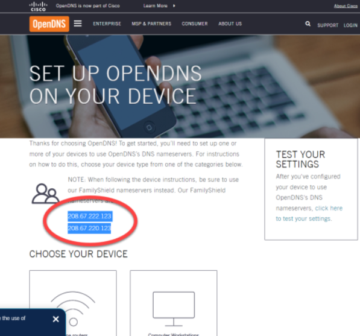

Protecting Your Family from Adult Content
This will serve as a comprehensive list that will provide you the resources needed to secure your internet so that you and your family can explore the internet in safety, and within parameters you choose.
Currently, any child with internet access is at risk of creating a lifelong pornography addiction. Over 90% of church attending Christians admit that they have a problem in this area, which only accounts for those who are being honest with the survey. I heard a speaker answer the question, “When is it ok to let your kids have a phone?” The answer provided was, “Whenever you are ready for them to watch porn.”
A child can google certain key words, click google images, and find much more than they ever bargained for. The porn industry has taken over the internet, and their goal is to seduce you and your family. So what can you do to insure that your children are never exposed to this sort of content? Easy. Destroy every electronic device you own and move to the middle of nowhere. For the rest of us who live and work within the tech industry, I’ve compiled a list of blocks that I have used for myself that provides the best possible armor to any venture online.
This list will be organized by levels. I highly recommend that you proceed and accomplish every one of these steps. One by itself is good protection, but there are always ways around it. But before we jump into the technical stuff, I’d highly recommend you consider the following:
Decide on a safe individual in your home to be the admin of all protection accounts.
If you currently struggle or have ever struggled with a porn addiction, you must purpose to disqualify yourself from this responsibility. The sober individual is only one PG-13 movie away from relapse at any given moment, and if you believe you are infallible, go ahead and disqualify yourself because of your bias. If your married, a wife is a good person to ask, however if she is among the 30% of women who struggle with or have ever struggled with this problem, ask a pastor or a parent. The responsibility is simple. They will create/change the passwords and passcodes to all items you give them so that you will not be tempted to bypass any in a moment of weakness.
Commit to this financially.
Most of the options that I will provide further down are completely free and relatively easy to setup. The one program that is pivotal to this entire process is Covenant Eyes. This is a software that has a monthly fee but will protect your family, notify your accountability partner when you search something you shouldn’t be looking at, and it even has admin access that prevents you from deleting it from your device without “admin” permission.
Commit to protecting EVERY device
This should go without saying, however, if you have a device that doesn’t have protection, that will be the device the addict chooses to cool their flesh by. Every tower, laptop, tablet, and phone with accessibility to the internet must be secured.
Security Level I: Browser/Phone Filter Downloads:
Google provides the FamilyLink service which is the only phone filtering option I’ve found that does what you need it to do. Setting up your entire family is as simple as linking their google accounts to your network. You can choose what services they have access too including browser and app store.
On iPhones/iPads, many of these protections already exist, but come inactive. You can simply go into your Settings, Screentime, and look into Screentime restrictions. From there, you have much of the same power as with FamilyLink.
Security Level II: Securing your Wifi
In my earlier article, I made this my level 5 protection, simply because it is so powerful. The reality is, it’s a simple fix that will take care of the majority of the problems online. In this step, we are going to tell the Router directly what websites we want it to block out. You are going to want to open your Command Prompt if you are using a Windows device ( or go to THIS LINK if you have a Mac). On a Windows device, type in “cmd” in your search bar which will bring up the Command Prompt app. Right click and select “Run as Administrator”. As soon as it pulls up, just type “ipconfig” into the line and press Enter. A bunch of information will show up but what you want to look for is the “Default Gateway”. This will be your devices Router address. Copy that address (the smaller one that looks something like “192.184.1.1”) and past it into your internet browser, and it should bring up your router login.
Now, unless you have managed your own router in the past, chances are you don’t know your router credentials. This might be as simple as typing in the default word “admin” for both user and password, otherwise, call up your service provider and have them walk you through how to get into your device.
Once you’re in, you will have the ability to change your DNS information, which will drastically fortify your home protection. You can go to OpenDNS and choose from a few different options. You can either create an account and setup filtering according to your particular needs, or you can use their default DNS Family Shield settings which does most of the work for you.

Finally, you will plug these numbers into your Routers where it asks you for your IPv4 Manual route. This might take a little while to kick in, and your Router might need to be reset once, but once you save those numbers in your Router, you can expedite the process by going back to your Command Prompt, and typing in the following without quotations: “ipconfig /flushdns”
This will hard refresh your DNS settings and potentially kick you out of your network. Show it who’s boss by disconnecting your router, and then reconnecting it. Congratulations, you’ve graduated IT Technician school.
Security Level III: Covenant Eyes
You must download this program. As someone who makes a living at finding loopholes and breaking digital barriers, though there might be 100 different things to protect yourself, it only takes 101 to feed an addiction. Sign up today, let them know how many devices, how many users, etc. It’s a small price to pay for freedom. www.covenanteyes.com
Security Level IV: Host Files
Now we get into the harder stuff. Please don’t let this dissuade you from protecting you and your family. The time and effort is well worth it in the end. What we have done so far is to block the onslaught of potential pornography at a browser level. Now we are going to tell our computer what sites can’t load. You can manually add websites to your Host file, and those files will not populate no matter what. That being said, you don’t want to manually add millions of porn sites to your list. Thankfully, someone has already done that for you.
Steven Black has a continuously updating list of websites added to his host file, and he shares that openly on his GitHub profile: https://github.com/StevenBlack/hosts/blob/master/extensions/porn/sinfonietta/hosts
Simply click the “Raw” button, select all addresses on that list and copy/paste to your host file.
Finding the Host File
Windows
- Type in search "Notepad"
- Right Click and select "Run as Administrator"
- File “Open File”
- Navigate to C:\Windows\System32\drivers\etc
- Where it says “Text Documents (*.txt)”, select “All Files (*.*)”
- Double click on “hosts” (NOT the .ics file)
- Paste the StevenBlack list at the bottom of this text file
- Save
For further explanation and a video tutorial for windows setup, click here.
Mac
I am not a Mac user, however, THIS LINK does a great job at explaining what to do to get to the host file. Once you get to the correct place, paste the StevenBlack list at the bottom of the text file and save.
Final Touches
Turn OFF Search Engine Images Settings
Block Search Engine images from appearing, universally. You will have to do this for Google, Yahoo, Bing, etc. The reason for this is that even though you can block sites from populating, search engines can still show you “images” from sites that you’ve blocked. While you won’t be able to access the site itself, the image is still completely accessible. It’s best to simply block all images from appearing by going into the settings of these search engines and specifying, or simply adding ie images.google.com to the hosts file list. While the blockers already installed will block the majority of the keywords that curious wanderers would search for, it’s not guaranteed that they will stop ALL images, so do yourself and your family a favor, eliminate any and every temptation.
Block Ads and Clickbait
Block Google ImagesChrome Extension
AdBlocker for Android
Ad Blocker for iPhone
Final Thoughts
In the age we live in, with advanced technologies, tyrannical/corrupt governments, and a low view of scripture, very little stands between you and enslavement. The scriptures say, “For nothing is secret, that shall not be made manifest; neither any thing hid, that shall not be known and come abroad” (Lk 8:17). While that stands as a constant warning, the reality is, sin makes us stupid. Sin seems right in the moment and temptation can take us like a rip current. If only people were aware of the power of the technology that is currently in play, they would see that their sin will be revealed VERY soon.
As you read this, your data is being collected, analyzed, and filed by companies that are paid for that very task. They know your location, where you live, how much money you make, and yes, even your private browser history that you deleted. The day is approaching, and is already here where big tech will sell that information to the highest bidder to discredit your witness, to shame you and your family, to manipulate and blackmail you, all because of a sin you think you’re doing secretly. It wasn’t enough that the scripture tells you that God sees your every action and though. Now that websites exist to expose this information publicly to anyone who searches your name, NOW will you take this sin seriously?
By God’s standard, all of us who currently or ever have dealt with this problem are adulterers in His sight. Do you realize that because of this, your spouse has a godly right to divorce you if the sin was done within the marriage covenant? Once this information inevitably goes public, what will it say about you? Make it a priority to end this foolishness today, tomorrow might be too late.